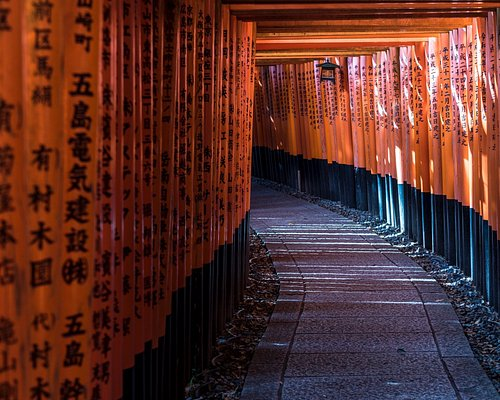
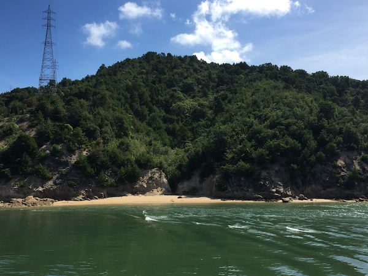
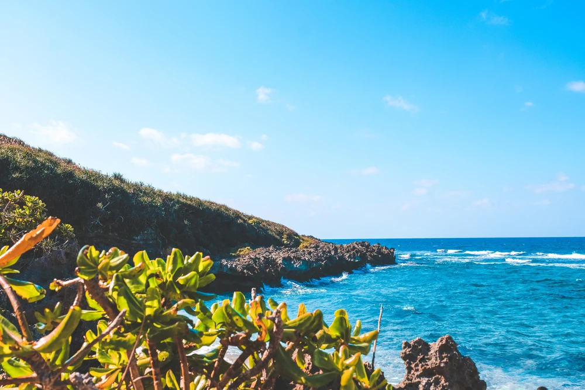

This shrine is one of many located throughout Japan that was built to honor Inari, the Shinto god of rice.
Arguably no decent destination in Japan is complete without an onsen, and the Art Island of Naoshima doesn’t disappoint us with its own take. We recommend I♥︎湯 (pronounced I love yu) for one of the most unique Onsen experiences you could hope for.
One of the most popular tourist destinations in Japan is the tropical island of Okinawa. There are many charming traits that are unique to Okinawa, such as its abundance of nature and the distinct culture that has been shaped by its own history and geography